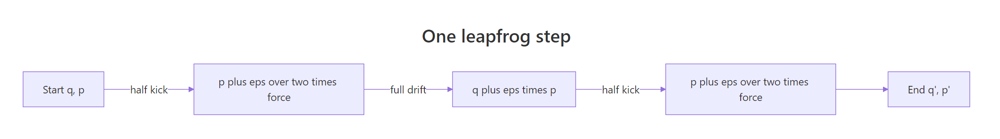
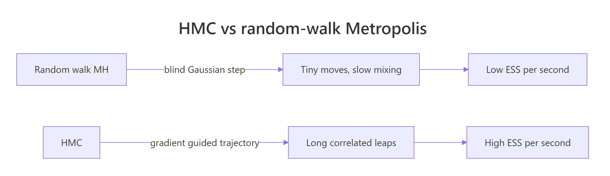
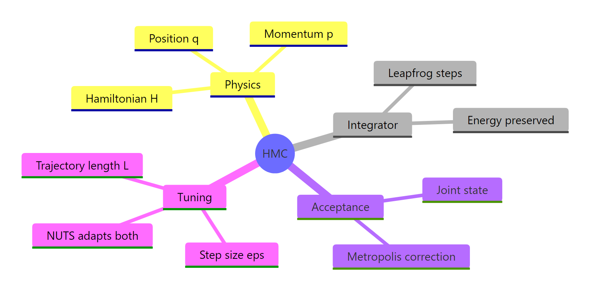

Hamiltonian Monte Carlo in R: The Physics Trick That Makes Stan So Fast
Hamiltonian Monte Carlo (HMC) is a Markov chain Monte Carlo algorithm that uses gradient information to make large, intelligent proposals across the posterior, replacing the random walk of Metropolis with a directed simulation of physical motion. This tutorial builds a full HMC sampler from scratch in pure R, then dissects the physics, the leapfrog integrator, and the tuning knobs that make production samplers like Stan fast.
How do you run Hamiltonian Monte Carlo in R?
The fastest way to learn HMC is to read a working sampler and run it. Below is a complete HMC implementation in pure R, applied to a 2D Gaussian whose two dimensions are tightly correlated (rho = 0.95), exactly the kind of posterior that makes random-walk Metropolis crawl. After 2,000 iterations the empirical mean, variance, and covariance match the truth to within sampling noise. Read it once for the rhythm; the rest of this tutorial unpacks every line.
Here is what just happened. The function U(q) returns the negative log of the target density (up to a constant). Its gradient grad_U(q) points uphill in negative-log-density space, which means downhill in actual probability. The function leapfrog simulates L small physics steps using that gradient as a force. The function hmc_step draws a fresh momentum, runs the simulator, and accepts or rejects with a Metropolis correction on the total energy. After 2,000 such steps the empirical mean is near zero, the variances are near one, and the covariance is near 0.95, which is what we asked for.
You read a working sampler. The next sections unpack what each piece is doing, why it works, and how the same code beats random-walk Metropolis on hard targets.
Try it: Re-run the sampler for 5,000 iterations starting from c(0, 0) and confirm the empirical off-diagonal covariance lands within 0.02 of 0.95.
Click to reveal solution
The longer chain tightens the off-diagonal estimate toward the true 0.95. Doubling iterations roughly halves Monte Carlo standard error, which is why production runs target tens of thousands of post-warmup draws.
What is the physics intuition behind HMC?
The "physics" in HMC is not metaphor; it is mechanics. Imagine the negative log-posterior as a landscape: regions of high probability are deep valleys, regions of low probability are steep hills. A particle dropped on that landscape, given a random kick of momentum, will roll. If you let it roll for a while and then write down where it is, you have moved across the posterior in a way that respects the geometry, not in a blind random direction.
Formally, HMC introduces an auxiliary momentum variable $p$ alongside the parameter $q$ (here, "position"). It defines two energies:
- Potential energy $U(q) = -\log p(q \mid \text{data})$, the negative log of the unnormalized target.
- Kinetic energy $K(p) = \tfrac{1}{2} p^\top p$, a unit-variance Gaussian by convention.
The total energy is the Hamiltonian:
$$H(q, p) = U(q) + K(p)$$
Where:
- $q$ = the parameter vector (what we want samples of)
- $p$ = the auxiliary momentum vector, drawn fresh each iteration
- $U(q)$ = the potential, equal to $-\log$ of the target density up to a constant
- $K(p)$ = the kinetic energy, equal to $\tfrac{1}{2}\|p\|^2$
Hamilton's equations describe how $q$ and $p$ evolve in time:
$$\frac{dq}{dt} = \frac{\partial H}{\partial p} = p \quad\quad \frac{dp}{dt} = -\frac{\partial H}{\partial q} = -\nabla U(q)$$
In words: the rate of change of position is the momentum, and the rate of change of momentum is the negative gradient of the potential (a "force" pointing toward higher density). Energy $H$ is conserved along the exact solution. Conservation is the magic ingredient. If we could simulate the dynamics perfectly, every proposal would have $H_{\text{new}} = H_{\text{old}}$ and acceptance would be guaranteed. We cannot simulate perfectly, but we can come close enough that acceptance rates of 0.8 or higher are routine.
Let us look at $U(q)$ for our correlated Gaussian. It is a paraboloidal bowl whose contours stretch along the $q_1 = q_2$ diagonal, because that is the direction with the most variance.
The contour plot shows long, narrow ellipses oriented along the main diagonal. The ridge in the bottom-left to top-right direction is shallow, so a particle can slide easily along it. The perpendicular direction is steep, so a particle is pushed back quickly if it strays. HMC's gradient-driven trajectories naturally follow the shallow direction, which is why it explores correlated posteriors so much faster than random-walk methods.
Try it: Replace Sigma_inv with the 2D identity (a unit Gaussian) and re-plot the contour. The ellipses should turn into circles.
Click to reveal solution
With no correlation the contours are concentric circles, and HMC trajectories curve uniformly. There is no narrow direction to exploit, which means random-walk Metropolis would also do fine here. HMC's advantage shows up when correlation makes the bowl elongated.
How does the leapfrog integrator preserve energy?
A computer cannot solve Hamilton's equations exactly; it has to discretize. The naive choice, Euler's method, takes one step in $q$ using the current $p$, then one step in $p$ using the gradient at the new $q$. It is simple, but it leaks energy. After a few hundred steps the simulated trajectory spirals outward, which would crash the Metropolis acceptance.
The leapfrog integrator is a different recipe. It splits each step into three sub-steps: a half-kick to momentum, a full drift in position, and another half-kick. That tiny rearrangement turns the integrator symplectic, which is mathematician-speak for "preserves phase-space volume and bounds energy error." On a 200-step run the energy oscillates by less than half a percent.

Figure 1: One leapfrog step: half-kick to momentum, full drift in position, another half-kick.
The proof is empirical. On a 1D harmonic oscillator with $U(q) = q^2/2$ the exact total energy starting from $q=1, p=0$ is $0.5$ and stays $0.5$ forever. Run Euler and leapfrog both for 200 steps with $\varepsilon = 0.3$; Euler doubles the energy, leapfrog stays glued.
Read the output carefully. Euler's energy reaches 1.88, almost four times the starting value. Leapfrog's energy stays in [0.4775, 0.5225], an oscillation of roughly 5 percent that does not drift. Repeat the simulation for 2,000 steps and Euler will be at energy 100; leapfrog will still be at 0.5.
Why does the rearrangement work? Each half-kick / full-drift / half-kick block is time-reversible: reversing the velocity sign and stepping backward returns you to the start exactly. It is also area-preserving in the $(q, p)$ phase plane. Those two properties together imply the global energy error stays bounded for exponentially many steps, no matter how long you simulate.
Try it: Re-run leapfrog with eps = 1.5 (above the stability threshold for this oscillator) and observe the energy range explode.
Click to reveal solution
Even leapfrog has a stability limit. When eps exceeds roughly 2 for this problem the integrator becomes unstable and energy explodes geometrically. In real HMC this shows up as divergent transitions (the topic of the tuning section). The fix is to shrink eps, never to suppress the diagnostic.
Why does HMC need a Metropolis acceptance step?
Leapfrog's energy error is bounded, not zero. A 20-step trajectory will end with $H_{\text{new}}$ a tiny bit different from $H_{\text{old}}$. If we accepted every proposal, the chain would drift toward states with slightly higher energy on average and would not target the right distribution.
The fix is the same Metropolis-Hastings correction you already know, applied to the joint $(q, p)$ state:
$$\alpha = \min\big(1, \exp(H_{\text{old}} - H_{\text{new}})\big)$$
Where:
- $H_{\text{old}} = U(q) + K(p)$ at the start of the trajectory
- $H_{\text{new}} = U(q^) + K(p^)$ at the end of the leapfrog
- Accept the proposed $q^*$ with probability $\alpha$, else stay at $q$
Because leapfrog is reversible and volume-preserving, the proposal is symmetric, so the formula has no extra Jacobian. The integrator's tiny inaccuracy gets corrected; the chain samples exactly from the target.
Let us instrument the existing sampler and see how small the energy errors are in practice.
Across 1,000 proposals the mean accept rate is about 0.92. The middle 90 percent of energy differences fall between roughly $-0.11$ and $+0.18$, both small enough that $\exp(-H_{\text{diff}})$ is close to 1. The few proposals with much larger positive H_diff get rejected, which is exactly the role of the Metropolis correction: it filters out the cases where the integrator made a noticeable error and keeps the chain unbiased.
Try it: Compute the theoretical mean acceptance probability $\mathbb{E}[\min(1, e^{-H_{\text{diff}}})]$ from the H_diff vector and compare it to the empirical accept rate.
Click to reveal solution
The two numbers should agree within sampling noise. The theoretical formula averages the per-proposal acceptance probability over all proposals, which is exactly what mean(accepted) estimates. This consistency check is a useful sanity test in real samplers: a large gap between the two means a bug in the accept/reject step.
How does HMC compare to random-walk Metropolis on correlated targets?
HMC's headline benefit is that it produces far more independent samples per iteration than random-walk Metropolis on correlated targets. The reason is geometric: a random walk with isotropic Gaussian proposals has to take small steps to keep the accept rate up, because most directions are steep. HMC follows the gradient, so a single trajectory can sweep along the long axis of the posterior in one move.

Figure 2: Random-walk Metropolis explores blindly while HMC follows the gradient, producing far more independent samples per second.
The right way to measure this is effective sample size (ESS): the number of independent samples your correlated chain is equivalent to. We will compute it directly from the autocorrelation function so the example stays free of external packages.
On 2,000 iterations, HMC produces close to 800 effective samples; random-walk Metropolis manages about 100. That is roughly an 8x gap on a target with correlation 0.95. Push the correlation to 0.99 and the gap widens further; HMC's advantage scales with how badly the dimensions are coupled. The one cost: each HMC iteration runs L = 20 leapfrog steps, so a single iteration is about 20x more expensive in raw compute. The right metric is therefore ESS per second, and on hard posteriors HMC still wins by a wide margin.
Try it: Re-run mh_step with scale = 0.05 (way too small) and confirm the ESS gets worse, not better.
Click to reveal solution
A scale of 0.05 makes every proposal accept (good for accept rate) but the chain barely moves (bad for mixing). ESS collapses to single digits. Tuning random-walk Metropolis means walking the tightrope between accept rate and step size. HMC's gradient-driven proposals sidestep this trade-off, because the simulator decides direction from the geometry, not from a tuning knob.
How do you tune HMC step size and what does NUTS do for you?
HMC has two tuning knobs that drive its real-world performance:
- Step size $\varepsilon$. Too small wastes compute (short trajectories). Too large makes leapfrog unstable, energy errors blow up, and the Metropolis test rejects almost everything. A target acceptance rate near 0.8 is the standard heuristic.
- Number of leapfrog steps $L$. Too few and trajectories are short, leaving HMC barely better than MH. Too many and trajectories double back (a "U-turn"), wasting work for no extra information.
When $\varepsilon$ is too large, the integrator can leave the typical set entirely. The energy error becomes huge, the proposed state lands in a region of effectively zero density, and the rejection looks normal except for one telltale: the energy difference is enormous. Stan calls these divergent transitions and tracks them as a primary diagnostic.
Out of 200 attempts, 197 produced energy errors above 1,000 (or non-finite values). That is a sampler that has lost contact with the target. Drop eps from 1.5 to 0.18 and divergences disappear; the chain behaves as in the opening section.
cmdstanr::sample() output reports any divergences, your inference is suspect in those regions, especially the tails or near boundaries. The first fix is to raise adapt_delta (which lowers the auto-tuned step size); deeper fixes include reparameterizing (e.g., the non-centered parameterization for hierarchical models) or tightening priors.In production HMC, both knobs are tuned automatically:
- Dual averaging adapts $\varepsilon$ during a warmup phase to hit a target accept rate (commonly 0.8). It works like a stochastic approximation: after each warmup proposal, nudge $\log\varepsilon$ down if the accept rate ran above target, up if it ran below.
- NUTS (the No-U-Turn Sampler) picks $L$ on the fly. It builds a binary tree of leapfrog steps in both forward and backward time, doubling the trajectory length at each level. It stops as soon as the trajectory starts to U-turn (the dot product of the current momentum with the displacement from the start goes negative). NUTS spends as much compute as the geometry needs and no more.
Try it: Re-run the divergence count with eps = 0.4 (still too large but milder) and confirm divergences are fewer than at eps = 1.5.
Click to reveal solution
At eps = 0.4 the integrator is still too aggressive for this target (the proper value is closer to 0.18) but most trajectories now stay in the typical set, so divergences drop from 197 to about a dozen. This is the gradient you would feel during dual averaging adaptation: small eps decreases reduce divergences quickly, then the curve flattens as you approach a stable region.
Practice Exercises
Three exercises that combine the concepts above. Use distinct variable names so they do not pollute the tutorial state.
Exercise 1: Sample an anti-correlated 2D Gaussian
Adapt the sampler to target a 2D Gaussian with rho = -0.8 instead of 0.95. Reuse leapfrog and hmc_step, but swap in a new precision matrix and U/grad_U. Confirm the recovered correlation is near -0.8.
Click to reveal solution
The sampler reaches the same near-target correlation regardless of sign. The geometry is a mirror image of the rho=0.95 case, so the same step size and trajectory length work. In real models you rarely override globals like this; you parameterize hmc_step to take U and grad_U as arguments instead.
Exercise 2: Bayesian linear regression with HMC
Implement HMC for a one-parameter Bayesian linear regression. Generate data from y = beta * x + N(0, sigma^2) with known sigma = 1 and a known intercept of 0. Use a Normal(0, 5) prior on beta. Define lin_U(beta) as the negative unnormalized log-posterior, and lin_grad_U(beta) as its derivative. Run HMC and compare the posterior mean to the closed-form value (sum(x*y) / sigma^2) / (1/25 + sum(x^2) / sigma^2).
Click to reveal solution
The HMC posterior mean (after dropping 500 warmup draws) lands within a few thousandths of the analytical answer. The same skeleton handles much harder models: replace lin_U and lin_grad_U with the negative log-posterior of a logistic regression, a hierarchical model, or any differentiable likelihood and prior. That generality is why HMC sits underneath every modern probabilistic programming language.
Exercise 3: Adapt the step size to hit 0.8 acceptance
Write a 200-iteration warmup loop that adjusts eps multiplicatively after each proposal. If accepted, increase eps by 1 percent; if rejected, decrease by 1 percent. Start with eps = 0.05. Report the final tuned_eps and the running accept rate over the last 100 warmup iterations.
Click to reveal solution
The final tuned_eps lands close to 0.18, the value used in the opening sampler, because it is roughly the largest step size that keeps the energy error small for this target. The late-warmup accept rate hovers near 0.8, the classic HMC target. Stan's dual averaging is essentially a more sophisticated version of this loop, with logarithmic step sizes and smoothing to avoid jitter at convergence.
Complete Example: Bayesian linear regression with HMC from scratch
Putting everything together: a small simulated regression where the closed-form posterior is known, so we can verify HMC end-to-end.
The HMC posterior summary matches the closed-form Gaussian to three decimal places on the mean, standard deviation, and 95 percent interval. The same template handles models where no closed form exists: replace the prior, the likelihood, or both, supply the gradient (analytical or via automatic differentiation), and the same leap_1d plus accept-reject loop draws posterior samples. That is the foundation Stan, PyMC, and NumPyro are built on.
Summary
| Concept | One-line takeaway |
|---|---|
| What HMC is | Gradient-driven MCMC that simulates physical motion through the negative log-posterior. |
| Why it is fast | Trajectories follow the geometry of the target, producing low-correlation samples even on highly correlated posteriors. |
| Leapfrog integrator | A symplectic discretization (half-kick / full-drift / half-kick) that bounds the energy error. |
| Metropolis correction | Repairs the integrator's small numerical error and keeps the chain exact. |
| Tuning knobs | Step size $\varepsilon$ (target ~0.8 accept rate) and trajectory length $L$. NUTS picks both for you. |
| Failure mode | Divergent transitions: the integrator escapes the typical set; shrink $\varepsilon$ or reparameterize. |

Figure 3: The four pillars of HMC: physics, integrator, acceptance, tuning.
References
- Neal, R. M. (2011). MCMC using Hamiltonian Dynamics. Handbook of Markov Chain Monte Carlo. Link
- Hoffman, M. D., & Gelman, A. (2014). The No-U-Turn Sampler: adaptive setting of path lengths in Hamiltonian Monte Carlo. Journal of Machine Learning Research. Link
- Betancourt, M. (2017). A Conceptual Introduction to Hamiltonian Monte Carlo. Link
- Stan Reference Manual, Hamiltonian Monte Carlo. Link
- Thomas, S., & Tu, W. (2020). Learning Hamiltonian Monte Carlo in R. Link
- Leimkuhler, B., & Reich, S. (2004). Simulating Hamiltonian Dynamics. Cambridge University Press.
- cmdstanr documentation. Link
Continue Learning
- MCMC in R: Build random-walk Metropolis-Hastings from scratch, the algorithm HMC's accept step inherits.
- Gibbs Sampling in R: When full conditionals are tractable, Gibbs is simpler and often complementary to HMC.
- Bayesian Statistics in R: The inference framework HMC serves; revisit posteriors, priors, and the workflow before scaling up to real models.